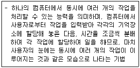
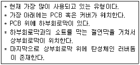
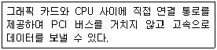
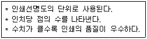

PC정비사-2급 (2012-04-29 기출문제)
1과목: PC유지보수
1. Windows XP에서 숨은 공유(Hidden Share)의 폴더 이름으로 올바른 것은?
- INSTALL@
- INSTALL#
- INSTALL$
- INSTALL&
(정답률: 89%)

2. 다음에서 설명하는 기술 명칭은?

- 비대칭적 다중 처리(Asymmetric Multiprocessing)
- 대칭적 다중 처리(Symmetric Multiprocessing)
- 멀티태스킹(Multitasking)
- 비주얼 프로그래밍(Visual Programming)
(정답률: 94%)
3. MMC(Microsoft Management Console)에 대한 설명 중 잘못된 것은?
- MMC에는 컴퓨터, 서비스, 기타 시스템 구성 요소 및 네트워크를 관리하는 데 사용할 수 있는 관리도구가 들어 있다.
- 스냅인 이라는 관리 도구를 한 개 이상 콘솔에 추가할 수 있다.
- 저장된 MMC는 Windows 2000, XP에서 동일하게 사용할 수 있다.
- [시작] - [실행]을 클릭한 후 MMC를 입력하여 실행한다.
(정답률: 78%)
4. 에러를 자신이 찾아 수정할 수 있는 코드는?
- 패리티 코드(Parity Code)
- 해밍 코드(Hamming Code)
- 그레이 코드(Gray Code)
- BCD코드(Binary Coded Decimal)
(정답률: 88%)
5. 다음에 나열한 항목들 중 그림 사용자 인터페이스(GUI)에 대한 설명으로서 적절하지 못한 것은?
- 디스크상의 파일 및 디렉터리는 화면상의 파일 및 폴더 아이콘으로 대응되어 표현된다.
- GUI환경은 파일의 복사와 같은 파일 관리 방법을 끌어다 놓기(Drag & Drop)등을 이용하여 손쉽게 처리할 수 있다.
- 끌어다 놓기(Drag & Drop)기능은 파일 삭제를 수행할 수 없다.
- 프로그램의 실행은 폴더내의 프로그램 아이콘을 마우스로 클릭하여 실행시킨다.
(정답률: 81%)
6. 하드디스크 최적화와 관련된 설명으로 잘못된 것은?
- 주기적으로 디스크 정리를 이용하여 선택한 디스크의 임시 인터넷 파일이나 다운로드한 프로그램 파일 등을 비워 빈 공간을 유지한다.
- 디스크 속도가 예전보다 느려지면 디스크 조각 모음을 실행해 디스크 최적화를 유지한다.
- NTFS는 FAT32 파일 시스템보다 시스템 안정성이 향상되지만 100GByte 이상의 하드디스크에서는 사용할 수 없다.
- 디스크 검사를 이용해 하드디스크에 문제가 있는지 정기적으로 검사한다.
(정답률: 86%)
7. Windows XP에서 BMP형식의 파일을 수정하고자 할 때 적당한 프로그램은?
- 워드패드
- 그림판
- 메모장
- 클립보드
(정답률: 85%)
8. 64비트 Windows XP에 대한 설명으로 올바른 것은?
- 32비트 전용 CPU에도 64비트 운영체제를 설치할 수 있다.
- 64비트 시스템을 꾸미기 위해서 메인보드, 그래픽 카드, 하드디스크 등 모든 하드웨어가 64비트용 이어야 한다.
- 기존의 32비트 장치 드라이버 파일을 그대로 사용할 수 있다.
- 128GB의 RAM과 16TB의 가상 메모리를 지원한다.
(정답률: 72%)
9. Windows XP 컴퓨터에서 시스템 자동 복구 만들기(ARS)에 대한 설명으로 잘못된 것은?
- 시스템 자동 복구 마법사에서 컴퓨터가 여러 요인으로 인해 부팅이 되지 않는 경우에 대비하여 응급 복구 디스켓을 만들 수 있다.
- [시작] - [프로그램] - [보조프로그램] - [시스템 도구] - [백업]메뉴를 선택한 후 시스템 자동 복구 마법사를 실행한다.
- Windows의 시스템 설정과 사용자의 로컬 시스템 파티션을 저장할 수 있다.
- [시작] - [설정] - [제어판] - [프로그램 추가/제거] - [시동디스크]를 선택한다.
(정답률: 79%)
10. 음성을 위한 압축 포맷에 해당하지 않는 것은?
- OGG
- AVI
- VQF
- MP3
(정답률: 88%)
11. windows XP에서 시스템 복원 대상으로 잘못된 것은?
- 시스템 파일
- Windows 구성요소
- 레지스트리
- 아래 한글 파일
(정답률: 87%)
12. Windows XP에서 공유 폴더 설정에 대한 설명 중 잘못된 것은?
- 최대 100명 까지 접근을 허용할 수 있다.
- 공유된 폴더에 접근 할 수 있는 그룹 및 사용자를 지정 할 수 있다.
- 명령 프롬프트에서 'net share'명령으로 컴퓨터의 공유된 전체 폴더를 확인할 수 있다.
- 관리 목적으로 공유된 경우 사용 권한을 설정할 수 없다.
(정답률: 78%)
13. 디스크 어레이(Array) 구축 방식 중 Windows XP에서 구축할 수 없는 것은?
- Raid-0 볼륨
- Raid-1 볼륨
- Raid-4 볼륨
- Raid-5 볼륨
(정답률: 61%)
14. 시스템에 둘 이상의 운영체제가 설치되어 있는 경우 사용자가 선택하지 않을 때 시스템 부팅에 사용될 운영체제와 사용자의 입력을 대기할 시간 등을 설정할 수 있는 곳으로 올바른 것은?
- [내 컴퓨터] - [속성] - [시스템 등록 정보] - [고급] - [시작 및 복구]
- [내 컴퓨터] - [속성] - [시스템 등록 정보] - [고급] - [사용자 프로필]
- [내 컴퓨터] - [속성] - [시스템 등록 정보] - [하드웨어] - [장치관리자]
- [내 컴퓨터] - [속성] - [시스템 등록 정보] - [하드웨어] - [하드웨어 프로필]
(정답률: 70%)
15. 다음의 프로그램 중 성격이 다른 하나는?
- Defrag
- Microsoft Security Essentials
- V3
- 노턴 안티바이러스 2011
(정답률: 82%)
2과목: PC운영체제
16. 아래에서 설명하는 키보드의 접점방식은?

- 순수 기계식 스위치 타입(Pure Mechanical Switch Type)
- 폼 엘레멘트 타입(Form Element Type)
- 멤브레인 스위치 타입(Membrane Switch Type)
- 캐패시터 스위치 타입(Capacitive Switch Type)
(정답률: 84%)
17. 그래픽 카드에 장착된 그래픽 프로세서와 비디오램의 상관 관계에 대한 설명 중 잘못된 것은?
- 비디오램은 빠를수록 좋다.
- 최신 그래픽 프로세서에는 비디오램이 내장되어 있다.
- 비디오램의 버스폭이 클수록 좋다.
- 장착된 비디오램의 용량이 클 수록 해상도가 높다.
(정답률: 62%)
18. PCI-Express x16 Bus의 최대 전송 속도는?
- 33MB/초
- 8GB/초
- 66MB/초
- 100GB/초
(정답률: 80%)
19. 뮤직 신디사이저, 악기, 컴퓨터 등을 상호 접속이 가능하도록 하는 인터페이스 규격은?
- MPEG
- MPC
- BUS
- MIDI
(정답률: 86%)
20. 스캐너로 입력받은 문서의 내용을 텍스트로 변경하는 기기는?
- OCR
- 디더링
- 캡처
- CAD
(정답률: 78%)
21. 컴퓨터 본체의 파워 서플라이에서 공급되는 전압의 종류가 아닌 것은?
- +3.3V, +5V
- +3.3V, +12V
- +5V, +12V
- +5V, +9V
(정답률: 76%)
22. PCM 방식으로 아날로그 데이터를 디지털 데이터로 변환할 때 몇 비트로 표본화하느냐에 따라 음질이 달라진다. 다음 중 CD 음질 수준으로 샘플링할 때의 기준은?
- 11.025khz, 8비트, 모노
- 22.⑤0khz, 8비트, 모노
- 44.100khz, 8비트, 스테레오
- 44.100khz, 16비트, 스테레오
(정답률: 72%)
23. 'IEEE 1284'는 무엇에 대한 규격인가?
- 직렬포트
- USB
- 병렬포트
- LAN
(정답률: 71%)
24. PC의 메인보드는 메인보드를 제어하는 칩셋에 의하여 성능이 달라질 수 있으나 이러한 하드웨어 뿐만 아니라 제어 소프트웨어도 중요하다. 이러한 것을 무엇이라고 하는가?
- BIOS
- CMOS
- CACHE
- TCP/IP
(정답률: 74%)
25. 메인보드의 램 소켓에 기재된 표시로 올바른 것은?
- PCI #1
- PCI/ISA
- AGP #1
- BANK 1
(정답률: 75%)
26. 다음에 설명하는 기능을 가진 장치는?

- DMA
- Accelerated Graphic Port
- Mpeg Card
- PC-100
(정답률: 56%)
27. CPU 기능 중 하나인 제어장치의 구성요소로 잘못된 것은?
- 프로그램 계수기
- 명령 레지스터
- 명령 해독기
- 보수기
(정답률: 80%)
28. 다음은 어떤 단위에 대한 설명인가?

- CPS
- DPI
- PPM
- LPM
(정답률: 82%)
29. ODD 인터페이스 방식이 아닌 것은?
- AT-Bus
- SCSI
- EIDE
- ESDI
(정답률: 49%)
30. 램의 종류가 아닌 것은?
- SDRAM
- DDR2-DRAM
- TTRRAM
- DDR3-DRAM
(정답률: 84%)
3과목: PC주변기기
31. PC 내부의 발열과 전원에 대한 설명 중 잘못된 것은?
- Geforce 계열의 3D를 지원하는 비디오 카드는 예전 2D만 지원하는 비디오 카드보다 발열량이 매우 적다.
- 컴퓨터 케이스에 전류가 흐르는 경우는 파워 또는 케이스의 절연 장치가 불량한 경우이다.
- PC 본체에 연결된 휀(FAN)이 동작할 때 환기가 잘되도록 배기구에 장애물을 제거한다.
- CPU위에 장착된 쿨러에 이상이 있을 경우 PC의 동작에 문제가 생길 수 있다.
(정답률: 84%)
32. Award 바이오스의 BIOS SETUP 중 "CPU의 클록이나 메모리 타이밍 값을 조정"할 때 사용하는 메뉴는?
- Frequency/Voltage Control
- PC Health Status
- Integrated Peripherals
- PnP/PCI Configurations
(정답률: 72%)
33. 컴퓨터를 켜면 처음에는 아무 문제가 없으나 몇 분이 지나면 시스템이 멈추는 현상이 나타난다. 전원을 끄고 잠시 후 다시 켜면 부팅은 되지만 역시 같은 증상이 반복된다. 원인으로 보기에 타당한 것은?
- CPU의 냉각팬이 고장나 CPU의 열을 식혀주지 못한다.
- 메인보드의 BIOS 배터리가 방전되었다.
- 그래픽카드의 해상도가 너무 높게 설정되었다.
- 사운드 카드 드라이버가 손상된 것이 원인이다.
(정답률: 73%)
34. PC를 처음 조립할 때, 가장 기본적인 부팅 테스트를 하기위해 반드시 필요한 부품이 아닌 것은?
- CD-ROM
- 메인보드
- 파워 서플라이
- CPU
(정답률: 86%)
35. 시스템에서 BIOS 설정을 통해 부팅 시 암호를 설정했다가 암호를 분실한 경우, 가장 적절한 수리 방법은?
- 메모리를 모두 제거한 후 다시 장착한다.
- I/O 카드와 VGA 카드, CPU를 제거한 후 다시 장착한다.
- 메인보드에 장착된 배터리를 제거한 후 충분한 시간이 지난 뒤 다시 장착한다.
- 컴퓨터 전원 스위치의 ON/OFF 동작을 반복 해준다.
(정답률: 84%)
36. PnP의 발전된 형태로서 운영 중인 시스템의 전원을 끄지 않은 상태에서 장치나 부품을 교체해도 시스템에서 바로 인식하는 기술은?
- Hot Swap
- IDE
- PCI
- ACI
(정답률: 77%)
37. 업데이트된 드라이버를 설치했더니 시스템이 불안해지고 Windows XP에 이상이 생긴다. 문제를 해결하기 위한 방법으로 잘못된 것은?
- 마지막으로 성공한 구성으로 부팅해 본다.
- 드라이버 롤백 작업을 진행한다.
- BIOS 설정에서 부팅 순서를 변경한다.
- 시스템 복원을 실행한다.
(정답률: 77%)
38. 일반적인 PC 장애이다. 증상에 따른 원인 또는 대처 방법의 연결이 잘못된 것은?
- 하드디스크의 소음이 심해졌다. - 본체에 하드디스크를 고정시키는 나사가 헐거워 진 경우에도 소음이 심해질 수 있다.
- Windows에서 마우스의 움직임이 둔해졌다. - 볼 마우스의 경우 마우스를 장기간 사용한 경우 먼지 등의 이물질이 마우스의 볼에 붙어 조작감을 둔하게 할 수 있다.
- 하드디스크에 배드 섹터가 생겼다. - Windows의 '디스크 조각 모음' 프로그램으로 배드 섹터를 제거할 수 있다.
- 무선 마우스의 작동이 끊긴다 - 리시버의 위치를 조정하고 배터리를 교체한다.
(정답률: 80%)
39. 프로그램을 안전하게 제거하는 방법으로 잘못된 것은?
- 제어판의 프로그램 추가/제거 기능을 이용한다.
- 프로그램에서 제공하는 Uninstall 기능을 이용한다.
- 탐색기에서 프로그램 폴더를 찾아 삭제한다.
- 클린 스윕(Clean Sweep)과 같은 설치/제거 관리 프로그램을 이용한다.
(정답률: 81%)
40. Windows용 음악 프로그램을 이용하여 음악을 들으려 하는데 스피커에서는 아무 소리도 나지 않지만 해당 음악 프로그램은 정상적으로 돌아가고 있다. 이러한 상황이 발생한 원인에 속하지 않는 것은?
- 사운드 카드 드라이버가 오류이다.
- 그래픽 카드에 문제가 있다.
- Windows의 볼륨 조절 기능에서 소리 출력을 없앴다.
- 스피커의 볼륨을 최대한 작게 설정했다.
(정답률: 80%)
41. 인터넷에서 음성이나 영상, 애니매이션 등을 실시간으로 재생 가능하도록 하는 기법으로 올바른 것은?
- 멀티태스킹
- 버퍼링
- 스트리밍
- 스풀링
(정답률: 82%)
42. 잉크젯 프린터의 노즐이 막혔을 때 대처 요령으로 올바른 것은?
- 송곳으로 뚫는다.
- 뜨거운 물에 적셔 준다.
- 헤드를 교체한다.
- 노즐 부분을 건조시킨다.
(정답률: 81%)
43. Windows XP의 시스템 파일 중 파티션 정보를 관리하는 것으로 올바른 것은?
- partmgr.sys
- mountmgr.sys
- ntoskrnl.exe
- intelide.sys
(정답률: 79%)
44. 다음 질환 중 VDT 증후군에 해당되지 않는 것은?
- 습도건조, 호흡저하(호흡계 질환)
- 시력저하, 망막건조 백내장(안과계 질환)
- 두통, 스트레스(정신계 질환)
- 손목, 어깨, 허리(신경, 관절계 질환)
(정답률: 86%)
45. BIOS를 업그레이드할 때 주의할 사항이 아닌 것은?
- BIOS 업그레이드 중간에 전원이 꺼지면 부팅이 안되는 문제가 발생할 수 있다.
- Windows 환경에서 BIOS를 업그레이드 할 수도 있다.
- BIOS 업그레이드 후에는 반드시 Format 하여 Windows를 재설치 해야 한다.
- 최신 버전의 BIOS는 ROM이나 BIN 파일로 제공되는 경우가 많다.
(정답률: 72%)
4과목: PC네트워크
46. 인터넷 사용자가 늘면서 여러가지 문제점도 발생하고 있다. 그 중에 하나가 스팸(SPAM)이라는 것이다. 스팸에 대한 설명으로 올바른 것은?
- 특정 내용의 메일을 다른 많은 사람들의 E-메일 박스에 보내는 것을 말한다.
- 바이러스를 유포시키는 행위이다.
- 고의로 인터넷 통신을 차단하는 행위이다.
- 남의 개인 정보를 허락없이 갖는 행위이다.
(정답률: 83%)
47. G메일에 대한 기능 설명 중 거리가 먼 것은?
- 메일 읽기
- 메일 쓰기
- 메일 저장
- 3일 이내 보낸 메일 취소
(정답률: 89%)
48. 전송 매체 중 내부에 코어와 이를 감싸는 굴절률이 다른 유리나 플라스틱으로 된 외부 클래딩(Cladding)으로 구성되어 있는 전송매체로 올바른 것은?
- Twist Pair 케이블
- CATV 동축 케이블
- 광섬유 케이블
- Baseband 동축 케이블
(정답률: 83%)
49. 네트워크의 허브의 종류가 아닌 것은?
- Dummy Hub
- Switch Hub
- Intelligent Hub
- Queue Hub
(정답률: 69%)
50. 루프백(Loopback) 주소를 나타내는 특수 IP 주소는?
- 127.0.0.1
- 1.1.1.1
- 255.255.255.255
- 0.0.0.1
(정답률: 84%)
Windows XP에서는 숨은 공유 폴더를 만들 수 있습니다. 이러한 폴더는 이름 끝에 "$" 기호가 붙어 있습니다. 이러한 폴더는 일반적으로 시스템 관리자나 네트워크 관리자가 사용합니다. "INSTALL$" 폴더는 시스템 설치 파일을 저장하는 폴더로 사용될 수 있습니다. 이 폴더는 일반 사용자에게는 보이지 않으며, 관리자 권한이 필요합니다.